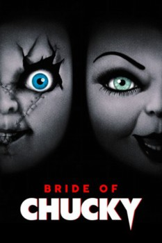

Bride of Chucky (1998)


Chucky gets lucky.

País:Estados Unidos, 1hr. 29min.
Idiomas:Inglés
GénerosComedia, Terror
Director/es:Ronny Yu
Guionistas:Don Mancini
Códec de vídeo:Unknown
Número: 212
TomatoMeter:

--

--
Clasificación IMDb:


5.6/10 (1.9K votos)
Certificación: